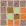
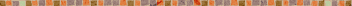

待ちに待ったゼルダ最新作がついに手元に届きました！
ということで、マニュアルを読むのももどかしく、早速プレイ開始。
今度のゼルダは本当におもしろいっ！
ゲームキューブの発表会で『風のタクト』の絵を見たときは、ちょっと意外だったんですが、プレイしてみると納得。ゲームの世界観や演出と、このアニメ調のＣＧがぴったりマッチしていることに気づくんです。
そして、リンクの表情の豊かなこと！ すっかりファンになりました。
今までゼルダってちょっと“通”なゲームのイメージがあったと思うんです。でも、今回はアクションでもコンボを使えたり、かなり初心者への配慮があるなって気がします。落ちているハートの数もいままでより多いみたい。
もちろん、おなじみの「ひっぱる」「ツボを割る」「ブーメラン」などのアクションは健在。むかしからのファンの人も、そうでない人も並列で遊べます。
今回の作品の舞台は海と、その上に浮かぶ島々。この海の旅が、とっても気持ちいいんです。波をかきわけ、ぐいぐい進む気分は最高ですよ。波の質感が、ちゃんと画面を通して伝わってくるんです。
さらに、島に点在するダンジョンはいつも通り、やりごたえタップリ。うーんと頭を悩ます謎解きが今回もいっぱいです。
アドバンスとの連携で、『ゼルダの伝説 ムジュラの仮面』のキャラクター「チンクル」が登場です。道順を教えてくれたり、爆弾でお手伝いしてくれたり。チンクルがいれば攻略本いらず（？）です。
ただし、ボス戦や重要な謎解きシーンでは手伝ってくれないのでご注意。「妖精さんひとりでがんばるのだ」と言われてしまいました。とほほ。
『風のタクト』のタイトル通り、今回はタクトを振って音楽を奏でることができます。そのほかにも、あらゆるところでステキな音楽が聴けますよ。
私のお気に入りは「森の島」で聴くことのできるデクの葉たちの演奏。ここはグラフィックの演出も素晴らしいので、必見です。みなさんもお気に入りの音楽を探してみてくださいね。
ご紹介できるのは、たくさんの要素の中のほんの一部。まさにコントローラを手放せない楽しさは、さすが任天堂を代表するタイトルです。みなさんもぜひじっくりと、時間をかけてプレイしてみてください。